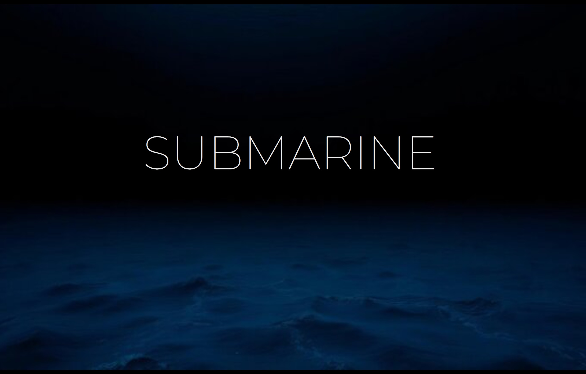
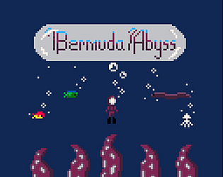
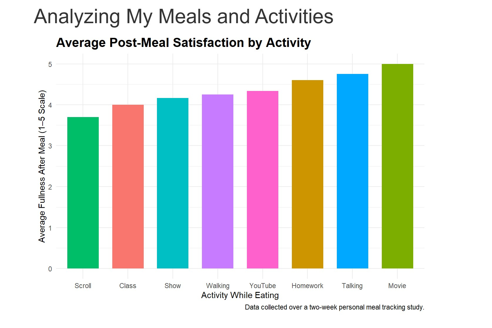

ADELINE CHVALA'S PORTFOLIO
What I do
games
I work in a team of students who design and create video games. I primarily do design, UI/UX, and art
UI/UX
My primary focus is Human Computer Interaction, I design websites and online spaces to be more user freindly
digital art
I specialize in Adobe Photoshop, Rhino 3D Design, and Adobe Premier Pro
Current Projects
These are some of my projects!



Education
UW - Madison Undergraduate Student
Expected Graduation: Spring 2027
Major: Information Science
Certificate: Computer Science, Video Game Design
Experience
I bring experiene across technology, communications, customer service, and creative projects, with roles randing from developing digital resources and organizing data to producing multimedia content and working in fast-paced, collaborative encironments. My work has strengthened my abaility to communicate effectively, adapt quickly, and use technology to solve practical problems